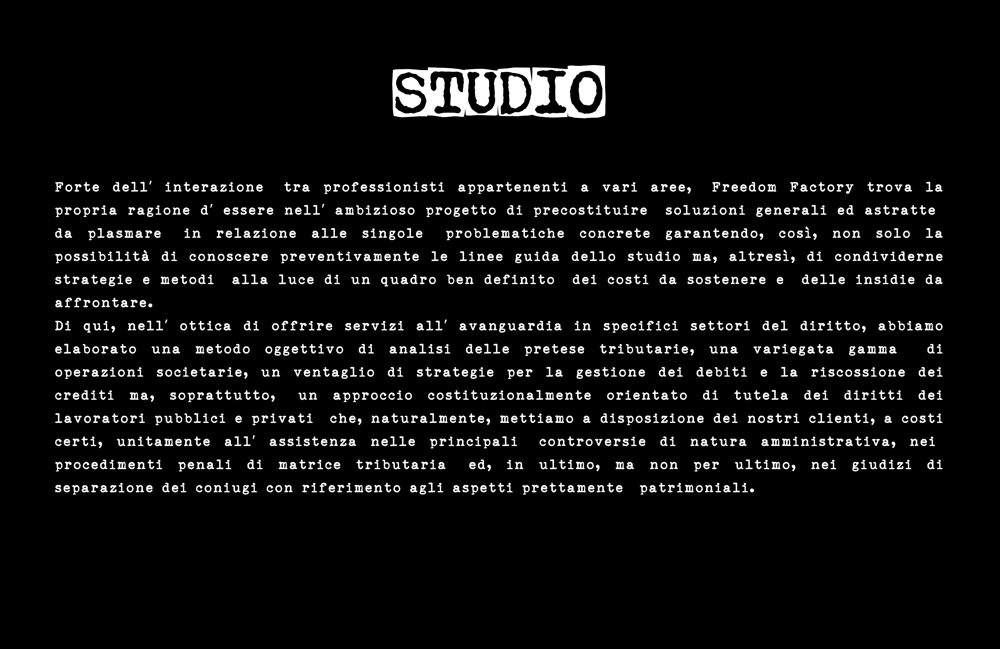

STUDIO
Forte dell' interazione tra professionisti appartenenti a vari aree, Freedom Factory trova la propria ragione d' essere nell' ambizioso progetto di precostituire soluzioni generali ed astratte da plasmare in relazione alle singole problematiche concrete garantendo, cosi, non solo la possibilita di conoscere preventivamente le linee guida dello studio ma, altresi, di condividerne strategie e metodi alla luce di un quadro ben definito dei costi da sostenere e delle insidie da affrontare.
Di qui, nell' ottica di offrire servizi all' avanguardia in specifici settori del diritto, abbiamo elaborato una metodo oggettivo di analisi delle pretese tributarie, una variegata gamma di operazioni societarie, un ventaglio di strategie per la gestione dei debiti e la riscossione dei crediti ma, soprattutto, un approccio costituzionalmente orientato di tutela dei diritti dei lavoratori pubblici e privati che, naturalmente, mettiamo a disposizione dei nostri clienti, a costi certi, unitamente all' assistenza nelle principali controversie di natura amministrativa, nei procedimenti penali di matrice tributaria ed, in ultimo, ma non per ultimo, nei giudizi di separazione dei coniugi con riferimento agli aspetti prettamente patrimoniali.